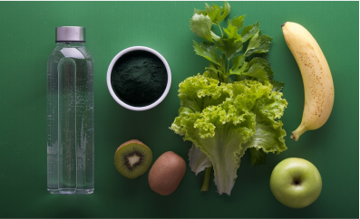
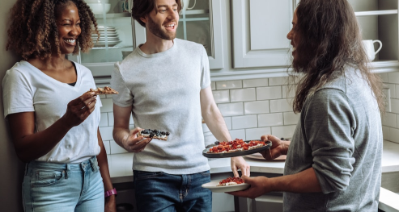
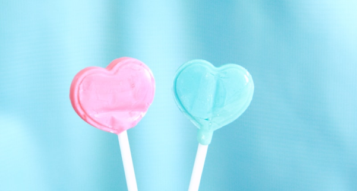
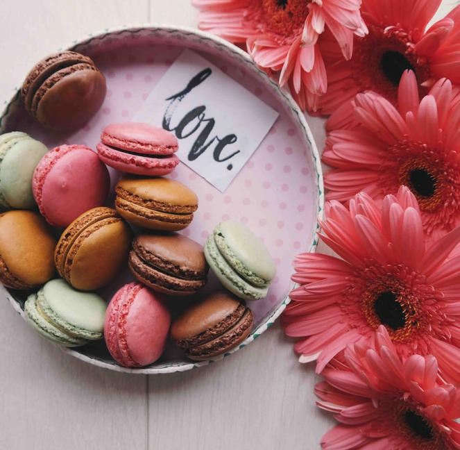
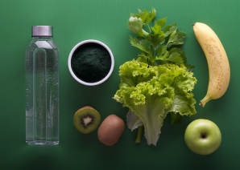

ПЛАНЕТА ЗДОРОВЬЯ И ПРОЦВЕТАНИЯ
СОСТАВЛЯЮЩИЕ СЕМЕЙНОГО СЧАСТЬЯ
-

ЗДОРОВЬЕ
Не каждому дано быть здоровым,но наши универсальные технологии дадут возможность,оставаться здоровым долгие годы.
-
ФИНАНСОВОЕ ПРОЦВЕТАНИЕ
Не забывайте,что деньги делаете Вы,а Вы-это здоровье вкупе с удачей,то Вам не миновать Финансового процветания.
-
УДАЧА
Неуловимая птица Феникс,но мы поможем ее поймать и держать в золотой клетке при себе, на долгие годы, на многие поколения.
-
СТАРИННЫЕ МОЛИТВЫ
Старинные молитвы — это залог нашего душевного покоя и равновесия.
-
Спасительная магия - Здоровье —
начало всех началЗдоровье — начало всех начал
Здоровье человека — это главный показатель потенциала и универсальности действий, от которого зависит полноценное достижение поставленных целей в своей жизни. Мы все помним старую поговорку: «В здоровом теле — здоровый дух!», которая в двух словах дает нам понимание о важности здоровья в жизни человека. Здоровый дух — это движущая сила к универсальности, полноценности, потенциала любого здорового человека. В нынешнее время, здоровье человека сильно пошатнулось, что произвело огромное желание людей вести здоровый образ жизни, искать именно те методы, которые будут благоприятно влиять на жизненный потенциал. В жизни человека есть цели, которые он ставит перед собой. Человек хочет иметь счастливую жизнь, финансовый достаток, материальные блага, полноценную семью, любимую работу. Но для того, чтобы достигнуть всех поставленных целей и желаемое превратить в явное, человеку нужно иметь полноценный здоровый образ жизни или восстановить утраченное здоровье. Сегодня медицина как традиционная, так и нетрадиционная предлагает огромное количество методов, но можем ли мы быть уверенны в том, что все эти методы не приведут к обратному, а именно к ухудшению здоровья. Мы просто обязаны пользоваться теми методами, которые уже имеют признание в обществе, проверенные временем и подтверждены опытом специалистов. Именно такие методы предлагает наш сервис созданный специалистами с многолетним опытом, которые стремятся к тому, чтобы общество было здоровым и сильным, счастливым и полноценным. Мы предлагаем только то, чем пользуемся сами! Мы предлагаем Вам универсальное решение к достижению абсолютного здоровья, что позволит Вам быть успешным в достижении своих целей, желаний и мечтаний. Ваша будущность — в наших руках! -
Истинный путь к финансовому процветанию
В нашей современной жизни финансы играют важную роль. Наше стремление быть независимым и свободным — это в большей мере иметь достаток, а именно финансовую свободу. От нас и только от нас зависит финансовое процветание, желание быть независимым от кого-либо или от чего-либо. Сегодня, если человек имеет финансовый достаток, значит он имеет власть, но не имеет право властвовать. Власть заключается только в том, что он умеет распоряжаться и управлять своими доходами. Основное количество людей думают что финансовое положение улучшает положение в обществе, но нужно знать, что ваше процветание зависит от того как Вы поставите себя в обществе. Вас будут уважать за то каким путем Вы обрели финансовый достаток, но не за то что Вы имеете миллионы, которые достались Вам по наследству.
Путь к процветанию очень прост, главное знать инструкцию и четко выполнять действия, которые позволят Вам обрести свободу и богатство, независимость и благосостояние, что позволит Вам иметь желаемые материальные блага. Истинный путь к финансовому процветанию — это путь, который должен обрести современный человек, так как от этого зависит достаток его семьи, положение в обществе, душевное состояние, а также умение управлять, контролировать, распоряжаться, что имеет огромное значение в характере человека. Имея стабильный финансовый достаток, любой человек задумывается о благотворительности, а значит думает не только о себе, но и о окружающем его обществе, что очень благоприятно сказывается на его положении. Найдите свой истинный путь или если Вам нужна наша помощь мы всегда рады дать Вам не просто совет, но и вести Вас к утверждению в стабильности Вашего финансового положения. -
Удача — это фундамент успешной жизни
Современный человек стремится к полноценной и счастливой жизни, залогом которой является успех. На пути к этому он прорабатывает для себя цели:
Быть богатым и здоровым.
Иметь счастливую семью.
Получить признание в обществе.
Работать и получать достойное вознаграждение.
Все вроде хорошо и цели отработаны, и стремление к достижению есть, и работаешь не покладая рук, но ничего не получается. Нет того результата, которого ожидаешь, чего-то не хватает. Задаешься вопросом: Почему люди получают желаемое при меньшем стремлении? Почему в моей жизни ничего не получается? И сам себе отвечаешь: Наверное я неудачник! Не ведая того, сам отвечаешь на свои вопросы и начинаешь искать путь к обретению той самой удачи, которая будет являться фундаментом успешной жизни. Начинаешь обращаться к гадалкам, покупать разнообразные талисманы и т. д., но через некоторое время понимаешь что это пустая трата времени и нужно найти что-то сверхъестественное, что-то уникальное. Найти то, что может быть только твоим и только для тебя. Удача вокруг нас! Нужно знать как ее заполучить, сделать так чтобы она вошла в твою жизнь навсегда и стала фундаментом всех твоих стремлений и достижений. Удача даст тебе: богатство, достаток, семейное счастье, здоровье, благосостояние, материальные блага, а самое главное абсолютное удовлетворение в жизни. Мы будем рады помочь Вам обрести фундамент успешной жизни! Наша цель сделать Вас счастливыми! Наша задача помочь Вам обрести удачу! -
Ключи, открывающие двери к достижению семейной идилии, благополучия и обретения душевного покоя
В жизни каждого из нас приходит момент создания своей семьи. Мы очень тщательно подходим к выбору того человека, с которым будем делиться всем тем, что мы имеем, во всем доверять, поддерживать в любую трудную минуту, то есть быть одним целым во всем и дополнять друг друга чего не хватает в каждом из нас, так как мы являемся половинами одного целого и только от этого зависит семейное счастье и полная идилия. Вот в принципе выбор сделан и все вроде бы хорошо, мы довольны тем, что достигли семейного счастья, вроде и достаток есть, и любовь, и радость, и все вроде бы идеально. Но в один прекрасный момент, как и в жизни каждого человека, приходят трудности и внезапно наша семейная жизнь становится кошмаром, потому что от этого страдает и супруг, и супруга, являющиеся одним целым. У нас нет желания даже приходить домой, нет желания видеть друг друга, любое слово нас раздражает, все что мы так долго строили в своей жизни рушится с непреодолимой силой. И те усилия, которые мы прикладываем для того, чтобы улучшить наш душевный покой, только ухудшают и разрушают семейную целостность. Думаю в этот момент нужно остановиться. В этот момент нужно осознать то, что нам нужна помощь, так как мы не в силах справиться с этим, тем более, если есть желание не только восстановить прежние отношения, но и улучшить их, так как крепость семейного счастья достигается временем прожитым вместе. Если мы не можем сами решить семейные трудности, то для этого нам нужна помощь специалиста, который может найти причины утраты семейной идилии, душевного покоя, чувств, которые ощущали раньше. Самое главное — это восстановление единого целого, которое было разрушено трудностями, вошедшими в нашу жизнь и неумением преодолевать их одним целым, что есть немаловажным в семейном благополучии. Наша задача, состоит в том, чтобы не просто восстановить семейные ценности, но и в том, чтобы научить проходить трудности вместе, как и в тот день, который Вы клялись любить и в горе, и в радости. Мы поставили себе целью не только восстановить, но и созидать разрушающийся брак.
-
Почему мы это делаем?
Мы делаем это для того, чтобы ценности семьи в обществе стояли на первом месте, так как достаток и благополучие, успех и богатство, здоровье и благополучие, напрямую зависят на развитие общества. Какая семья, такое и общество. Мы всегда рады прийти на помощь тем, кто оказался в трудной ситуации и ищет ключ к тем самым дверям семейного счастья, благополучия и душевного покоя. Не стойте на месте, исправьте свое мировоззрение, получите новые понятие о семейных ценностях, а для нас будет основной задачей сделать ваш брак не просто счастливым, но и нерушимым. Будьте счастливы, имейте тот достаток, от которого сможете уделять нуждающимся, любите друг друга, дорожите друг другом. Доверяйте, потому что на доверии строится крепость, не пользуйтесь доверием, так как ваша половинка это чувствует.
Обратитесь к нам и для нас будет честью вместе с Вами открыть дверь, от которой у нас есть ключ. -
Почему мы это делаем?

Семейное счастье, как правило, является одним из достижений в нашей жизни. В основном такое понятие как «семейное счастье» больше всего волнует женскую часть человечества, мужчины относятся столь отдаленно и меньше замечают те мелочи, которые замечают женщины.
Для женщины в семейном счастье как фундамент стоит достаток ее очага. Причиной многих ссор в семье сегодня в основном является отсутствие положенного достатка или того достатка, который представляет себе супруга. Стремление мужчины к достатку его семьи зачастую сказано направлением его женщины, но никак не самостремлением к самодостатку и это есть пробел, из-за которого страдают большинство семей. Что же делать в данном случае? Как достигнуть семейной идилии? Как научиться делать все вместе, а не порознь? Что нужно предпринять для развития общего достатка в семье? Где находить правильные слова друг для друга? И все таки как научиться строить семейное счастье?
Вот те вопросы, которые нас интересуют в тот момент, когда в нашу семейную жизнь приходят трудности, когда нет идилии в отношениях, когда наш брак рушится. Но мы боремся за созидание брака, так как любим друг друга. Не так ли?. Достаток в семье в основном зависит от отношения друг к другу, от понимания и поддержки в любой ситуации. Когда мужчина приходит с работы, нужно приготовить для него приятный вечер, чтобы он смог отдохнуть и в будущем желать и стремиться приходить домой. В основном происходит так: «Муж приходит домой, а жена говорит дорогой ты деньги принес?... или за ужином муж спрашивает: а что горчицы нет?..., а жена отвечает: а ты деньги дал на горчицу?». Нам нужно найти ответы, на наши вопросы: Как построить семейное счастье?. Для этого мы и стремимся, нашей задачей является не просто созидать семейные отношения, но и восстанавливать их. Мы работаем для Вас!!! Мы работаем вместе с Вами!!! Мы работаем ради общей цели!!! -
Любовь как глоток счастья,
радости и полноценной жизнИ -
Мы в жизни по разному представляем себе любовь и каждый человек пытается достигнуть идеальной любви, семейного счастья, полноценной жизни, радоваться каждому мгновению. Любовь для человека является самым важным чувством. Без любви человек как трава без воды. На протяжении своей жизни человек достигает определенных жизненно-важных для него чувств, но любовь является связующим звеном и без любви человек не может иметь полноценности того, чего достиг.
Любовь, она как созидающее и объединяющее все жизненные цели человека. Мы мечтаем о том, чтобы нас любили, уважали, проявляли к нам заботу. Но можем ли мы принимать, если сами не имеем и не осознаем, что такое истинная любовь? Естественно нет!!! Любовь она не действует на внешнем уровне, любовь относится к внутреннему миру человека и даже если человек будет показывать только делами свою любовь к другому, но внутри не будет состояния полноценной любви, то рано или поздно человек вскроется как скорлупа. Любовь не стоит связывать с влюбленностью, так как сама любовь вечна, а влюбленность — это как искра сегодня горит, а завтра потухла. Любовь она живет внутри нас и по мере нашего желания и действий, она возрастает и стает полноценной, истинной и искренней. Чистая и искренняя любовь способствует полноценному семейному счастью, полному оздоровлению человека, достижению достатка, обретению красивой улыбки, а самое главное удовлетворению в жизни и душевному покою. Сегодня человек за ради любви к другому идет на такие вещи как привороты, различные обряды, заговоры. Другие же люди, которые хотят обрести любовь покупают разнообразные талисманы, так как объединяют любовь с удачей и везением. Мы сегодня видим как в обществе больше всего присутствует любовь к себе и это является огромной проблемой человека, такие люди не умеют любить и только пользуются вашей любовью. По сути мы привыкли называть таких людей эгоистами. Если Вы еще думаете что эгоист любит себя, то Вы глубоко в этом заблуждаетесь, эгоист вообще не умеет любить. -
Итак. Что же все-таки может дать нам искренняя любовь?
Полноценную и счастливую жизнь. Семейное счастье. Уважение и заботу других людей. Искренность и жизнерадостную улыбку. Успех в достижении благосостояния. Абсолютное здоровье или выздоровление. Душевный и духовный покой. Умиротворение. Достаток и материальные блага в полной мере. Богатство счастья, радости и блаженства.
Проявите желание и начните стремиться к достижению полноценной любви, любите и будьте любимыми, дарите друг другу минуты счастья, созидайте свою любовь и как драгоценное дерево поливайте живой водой. А если у Вас возникнут вопросы: Как достигнуть любви? Как позаботиться о том, чтобы моя любовь возрастала? Как научиться искренне любить? Тогда мы с радостью придем к Вам на помощь и поможем Вам драгоценными советами, которые также бесценны как и наша жизнь.
Любовь — вечность! Любовь — это Вы! Кто мы? Наш сайт представляет услуги уникальных профессионалов, которые обладают эксклюзивными знаниями, аналогов которым нет. Опыт использования их технологий и методов 25 лет. Теперь это все доступно не только избранным.
Сможем ли мы Вам помочь?
Мы находим подход к каждому клиенту. К сожалению, по понятным причинам мы не раскрываем весь алгоритм наших методов. Все обсуждается в индивидуальном порядке при личном обращении.
СТАТЬИ
-
РАБОТА СО СНОВИДЕНИЯМИ
Не каждому дано быть здоровым,но наши универсальные технологии дадут возможность,оставаться здоровым долгие годы.
-

КАК ПРАВИЛЬНО ИСПОЛЬЗОВАТЬ РИТУАЛЬНЫЕ
Свечи - самый популярный магический атрибут. Свечи просты в использовании, их легко достать,
-
КАК ПРАВИЛЬНО ИСПОЛЬЗОВАТЬ РИТУАЛЬНЫЕ
Свечи - самый популярный магический атрибут. Свечи просты в использовании, их легко достать,
-
КАК ПРАВИЛЬНО ИСПОЛЬЗОВАТЬ РИТУАЛЬНЫЕ
Свечи - самый популярный магический атрибут. Свечи просты в использовании, их легко достать,
-
КАК ПРАВИЛЬНО ИСПОЛЬЗОВАТЬ РИТУАЛЬНЫЕ
Свечи - самый популярный магический атрибут. Свечи просты в использовании, их легко достать,